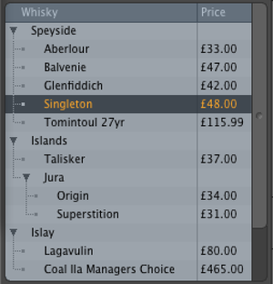

Treeview¶
‘’’Note: This page is incomplete. Sections 3.2 and 3.3 need expanding’’’
Overview¶
It is now possible for plugins to implement their own custom tree views, by utilising the following interfaces…
Tree - For iterating over a client trees structure
TreeView - For providing tree functionality required by the custom viewport
TreeListener / ListenerPort - For pushing updates to the custom viewport
Attributes - For providing data corresponding to individual items within the tree
1 2 3 4 5 | LXtTagInfoDesc MyTree::descInfo[] = {
{ LXsTREEVIEW_TYPE, "vpapplication MYTR MyTreeViewport @MyTree@TreeName@" },
{ LXsSRV_USERNAME, "MyTree" },
{ 0 }
};
|
Note that when adding the above interfaces, the TreeView must be the first as this specifies the primary type of the server as a custom tree viewport so that it appears in the viewport picker.
Below we shall look at each interface in turn…
Tree¶
As suggested above, the tree interface is not used for creating a tree, but is instead a simple iterator class for walking over an existing tree. Being an iterator it references a list of siblings of a tree item, with the current sibling being defined by a index. Spawning an iterator creates a new iterator referencing the relative item provided by the mode value to the call. A simple example implementation for easy adoption is…
1 2 3 4 5 6 7 8 9 10 11 12 13 14 15 16 | LxResult
MyTree::tree_Spawn (unsigned mode, void **ppvObj)
{
MyTree* spawnedTree = lx::GetServer<MyTree> (STRING_SET_TO_LXsSRV_USERNAME) -> Alloc (ppvObj);
spawnedTree->internalData = this->internalData;
if(mode == LXiTREE_PARENT)
spawnedTree->tree_ToParent();
else if (mode == LXiTREE_CHILD)
spawnedTree->tree_ToChild();
else if (mode == LXiTREE_ROOT)
spawnedTree->tree_ToRoot();
return LXe_OK;
}
|
For more information along with the full set of interface functions, see the tree_sdk.html document.
A few gotchas to look out for when implementing a custom tree are:
Ensure a call to ToParent sets the correct index, so that a subsequent call to ToChild will return an iterator to the original sibling list
ItemState and SetItemState act on the selected sibling, not the sibling list.
Basics¶
The treeview interface presents a large number of functions for adding behaviours to the treeview, but you don’t actually have to create any for it to work. This is handy as it means you can ensure your basic Tree interface implementation is working nicely without having to worry about how it’s used in the GUI. However, you’ll soon want to expand on that. Some of the simpler features you can implement are:
View setup using the ColumnCount and ColumnByIndex methods which determine the number, title and sizing of the columns in the treeview.
Item Selection via the ToPrimary, IsSelected and Select methods.
Basic item commands using CellCommand and BatchCommand
Tooltips by implementing ToolTip
Badges¶
More complex operations that the treeview supports are Badges, Region Mapping, and Drag&Drop support.
Badges are little icons that appear in the tree to display information, or act as buttons. <Add more details here…>
Input & Drag/Drop¶
The treeview interface provides the IsInputRegion method for determining the regions of the tree view for use in input mapping. For more details see [link to Input Region Mapping page].
Finally, there is also support for Drag & Drop functionality (see awin_sdk.html for details on how this works). The SupportedDragDropSourceTypes function should return a space-seperated string of source type tags
Attributes¶
The actual values displayed in the tree view are determined by calls to a subset of the attributes interface. The only methods you need to implement are…
Count - which should return the number of columns you’re providing data for, which is typically the number returned by TreeView::NumberOfColumns, except in cases where the rightmost column(s) are used purely for badges.
GetString - which populates a character array with the string to be displayed in a given column. The index parameter indicates the column for which the string is being requested (starting with zero).
The internal tree viewport implements the TreeListener interface for notifications of changes to the tree being displayed. In order to trigger these events you must implement the ListenerPort interface on your custom tree server. The easiest way to do this is to utilise the following helper class
1 2 3 4 5 6 7 8 9 10 11 12 13 14 15 16 17 18 19 20 21 22 23 24 25 26 27 28 29 30 31 32 33 34 35 36 37 38 39 40 41 42 43 44 45 46 47 48 49 50 51 52 53 54 55 56 57 58 59 60 61 62 63 64 65 66 67 | class TreeClientList
{
public:
TreeClientList ()
{
}
class ListenerClient
{
public:
ListenerClient *next, *prev;
ILxUnknownID obj;
CLxUser_TreeListener ifc;
};
CLxObjectList<ListenerClient> cl_list;
LxResult
AddListener (
ILxUnknownID object)
{
ListenerClient *client;
client = cl_list.AllocTail ();
client->obj = lx::UnkAddRef (object);
client->ifc.set (object);
return LXe_OK;
}
void
RemoveListener (
ILxUnknownID object)
{
ListenerClient *client;
for (client = cl_list.first; client; client = client->next)
if (client->obj == object)
{
lx::UnkRelease (client->obj);
cl_list.Delete (client);
return;
}
throw (LXe_NOTFOUND);
}
void
UpdateShape()
{
ListenerClient *client;
for (client = cl_list.first; client; client = client->next)
if (client->ifc.test ())
client->ifc.NewShape ();
}
void
UpdateAttributes()
{
ListenerClient *client;
for (client = cl_list.first; client; client = client->next)
if (client->ifc.test ())
client->ifc.NewAttributes ();
}
};
|
You can then implement the ListenerPort functions on your custom tree server by forwarding the calls to the matching ones on an instance of the above class that is shared by all your iterator objects for that tree. Likewise, whenever a value in the tree changes and a refresh is required a call to UpdateAttributes can be made, or a call to UpdateShape if the actual structure of the tree has changed.
More Information¶
*Tree (lx-tree.hpp) *Treeview (lx-treeview.hpp) *Python Treeview Example